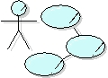

| Artefacto: Business Use Case Model |
|  |
|
| Plantillas | |
|---|---|
| Informes |
| Opciones de representación | UML Representation: Model, stereotyped as <<business use-case model>> The Business Use Case Model may have the following properties:
If the purpose of the business modeling effort is to reengineer the target organization, you should consider maintaining two variants of the Business Use-Case Model: one that shows the business actors and business use cases of the current organization (sometimes called "as-is"), and one that shows the target organization with new business actors and business use cases ("to-be"). If you are considering a significant redesign of the way the target organization works (business reengineering), this separation is needed otherwise the redesign will be developed without knowing what the proposed changes really are at the end, and you will not be able to estimate the effects or costs of those changes. It is like an architect who is asked to draw up plans for changing a townhouse into three flats, without having an as-is blueprint from which to work. The cost of maintaining two Business Use-Case Models is not insignificant, and you should carefully consider how much effort you put into a current model. Typically, you would not do more than identify and briefly describe the business use cases* and business actors. You would also briefly outline the business use cases you determine are key to the effort, possibly illustrating this with a simple activity diagram. The level of detail you choose should aim at providing a shared understanding of the target organization. You would not need this separation in the following situations:
See also Guideline: Target-Organization Assessment. *Note: when modeling an existing organization to create an as-is model, you need to do little more than create the brief descriptions of business use cases, business actors and key business events and associate these with the existing business goals because you can move more directly to capturing actual current business processes that realize these business use cases. The current business use cases serve as anchors to explain the purpose of the current business processes. When the purpose is business creation, the new business use cases are specifications for achievement of the business goals, for a business that does not yet exist. Consequently, they will need much more detail. |
|---|
© Copyright IBM Corp. 1987, 2006. Reservados todos los derechos. |